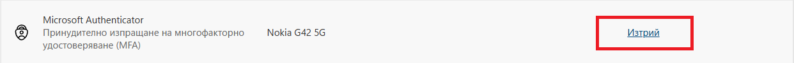

Двуфакторна защита на Microsoft акаунт в МОН
Начална страница
Връщане към страница - Работа с платформи и специализиран софтуер
Във връзка с използване на дигитални ресурси и профили в МОН Инструкция за добавяне на двуфакторна защита. Внимание, използвайте на своя отговорност - отворете следния линк - https://mysignins.microsoft.com/security-info - впишете се с потребителското си име в @edu.mon.bg - Информация за защита -> Добавяне на метод за влизане -> Microsoft Authenticator- от същото меню може да премахнете двуфакторната защита, ако сте я добавили по погрешка:

___________________________________________________________________________________________________ Следващите стъпки изпълнете от смартфона си: | __________________________________________________________________________________________________| QR кодове за сваляне на приложението *създадени благодарение на Adobe Express QR code generator
QR код за телефон на Android QR код за iOS IPhone
___________________________________________________________________________________________________ Следващите стъпки изпълнете от компютъра си: | __________________________________________________________________________________________________| - след като инсталирате приложението на смартфона, продължете с добавянето на двуфакторна защита: (От същото място може да се добави и удостоверяване чрез Google Authenticator -> Вместо напред, изберете -> Настройте друго приложение за удостоверяване)
→
- след добавяне на двуфакторна защита, при всяко вписване в акаунта ще получите уникален номер, изписан на екрана на устройството, от което се вписвате - компютър/телефон/таблет; - ще получите известие на телефона си при опит за вписване в профила ви; - за да докажете, че вие се вписвате, трябва да напишете номера от екрана на компютъра в приложението на телефона:
→
- така телефонът ви се превръща в token за вписване в профила ви. *задължително добавете още един алтернативен метод за вписване, в случай на повреда на устройството ви.
Готово! Вече профилът ви е настроен успешно. Инструкция за използване на дигитални ресурси
Начална страница
Връщане към страница - Работа с платформи и специализиран софтуер